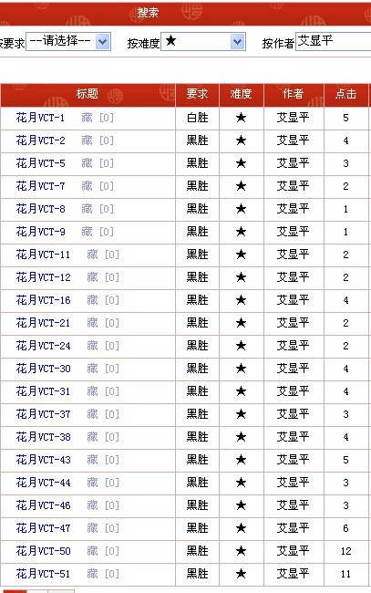
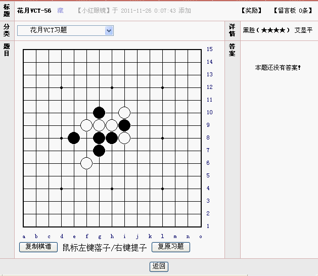
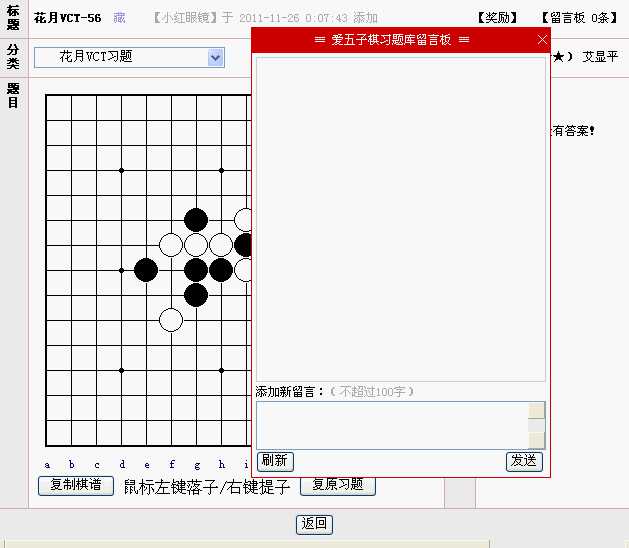

打造你自己的五子棋习题库
#1 打造你自己的五子棋习题库 作者：有志青年 发表时间：2011-11-26 10:47:44
爱五子棋网的五子棋习题库，目前已有习题近1300道，新近增加了收藏功能，可以打造只属于你自己的习题库。
我们常说苹果要跳一跳摘到，这里两层意思，你得努力的去跳一跳，有点挑战；同时这个苹果你还得通过跳能摘到，否则就会打消你的自信。
打造你自己的习题库，就是这个出发点，虽然有上千的习题，但并不都适合你，有些习题是雷同的，就像小孩子布置的罚抄100遍一样，没有意义了。
本站习题库所有习题免费浏览，不注册、不登陆都可以查阅习题，尝试解答，只是看不到答案（当然，很多题目目前没有答案）
如果打造自己的习题库，就需要注册并登录了，放心，不收费，也不花论坛金币
你找到怎么收藏那些你喜欢的习题了吗？
方法一：逐条浏览，看到喜欢的点击[藏]，即可
方法二：搜索，找你希望的习题类型，得到下图，之后逐个点击藏，即可。

［ 爱五子猫 于 2011-11-29 0:09:53 时花20金币送鲜花一朵］
#2 Re:打造你自己的五子棋习题库 作者：有志青年 发表时间：2011-11-26 10:49:57
你找到如何留言了吗？

你看到那个浮动的留言窗口了吗？
#3 Re:打造你自己的五子棋习题库 作者：满天星 发表时间：2011-11-26 10:56:29
谢谢 有志~~ 很实用~~
#4 Re:打造你自己的五子棋习题库 作者：满天星 发表时间：2011-11-26 10:57:40
威望就1 无法打包~~ 郁闷~
郁闷~［ 聚贤仙百合 于 2011-11-26 20:37:42 时花20金币送鲜花一朵］
#5 Re:打造你自己的五子棋习题库 作者：有志青年 发表时间：2011-11-26 11:00:08
打包？呵呵，那就如借书一样，束之高阁了，搜索之后点击标题后面的“藏”，空了做一做，就当工作累了的脑力换挡#6 Re:打造你自己的五子棋习题库 作者：小小亦默 发表时间：2011-11-26 11:04:32
 转眼威望21了 回想当初为了赚到5个威望换头像 为了赚到20个威望下十番棋 创建慢棋对局的日子 那个心酸这个爽啊
转眼威望21了 回想当初为了赚到5个威望换头像 为了赚到20个威望下十番棋 创建慢棋对局的日子 那个心酸这个爽啊
long time to say
#7 Re:打造你自己的五子棋习题库 作者：水晶水水 发表时间：2011-11-26 18:52:02
 这个好,考虑的真周到,题太多确实头晕.顶一下.
这个好,考虑的真周到,题太多确实头晕.顶一下.
#8 Re:打造你自己的五子棋习题库 作者：聚贤仙百合 发表时间：2011-11-26 20:35:20
这真是好主意#9 Re:打造你自己的五子棋习题库 作者：素手拈棋 发表时间：2011-11-26 23:14:01
第一次认认真真的逛论坛，晕得厉害，留下脚印，证明我来过，以免再次迷路。［ 一侠客一 于 2011-11-29 23:21:18 时花20金币送鲜花一朵］